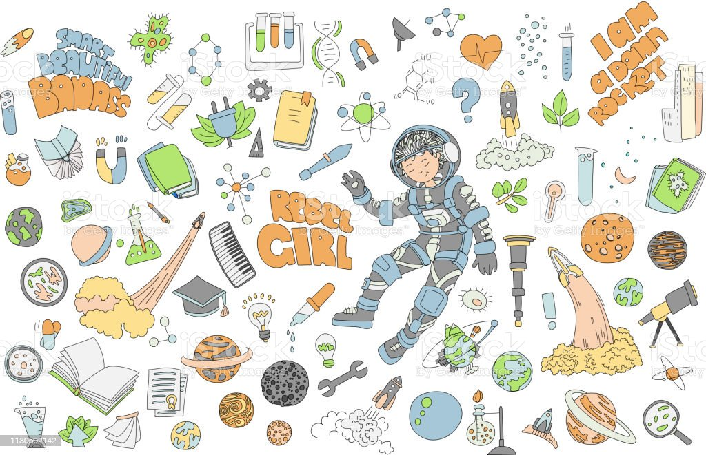
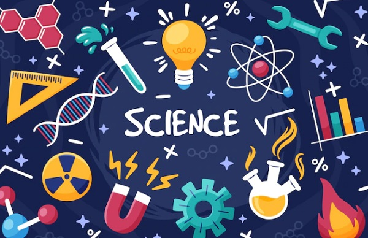

 Fisika adalah ilmu dalam sains yang mempelajari gejala-gejala alam dari segi materi dan energinya. Menurut Kamus Besar Bahasa Indonesia (KBBI) daring, fisika juga diartikan sebagai ilmu tentang zat dan energi, seperti panas, cahaya, dan bunyi. Dilansir e-Jurnal milik uny.ac.id, fisika adalah suatu ilmu pengetahuan yang menggambarkan usaha, temuan, wawasan, dan kearifan yang bersifat kolektif dari umat manusia. Oleh karena itu, mempelajari fisika sangat penting dalam perkembangan dunia di masa depan. Mengutip buku Penilaian Hasil Belajar Fisika oleh Mundilarto, fisika merupakan ilmu dasar yang memiliki karakteristik yang mencakup bangun ilmu. Fisika terdiri atas fakta, konsep, prinsip, hukum, postulat, teori, serta metodologi keilmuan. Bisa dibilang, fisika adalah ilmu yang terbentuk melalui prosedur baku atau biasa disebut sebagai metode ilmiah. Lalu apa tujuan mempelajari fisika? Menurut e-Jurnal dari unej.ac.id, tujuan utama pembelajaran fisika adalah untuk membekali para siswa dengan pengetahuan. Selain itu, fisika dapat membantu para murid dalam memahami dan meningkatkan kemampuan tentang ilmu pengetahuan serta teknologi. Fisika merupakan mata pelajaran yang membutuhkan pemahaman mendalam daripada sekadar menghafal rumus. Oleh sebab itu, pemahaman ilmu fisika dititikberatkan pada proses terbentuknya pengetahuan melalui penemuan, penyajian data secara sistematis, dan berdasarkan aturan tertentu, sehingga dalam mempelajarinya perlu aturan khusus.
 Berikut ini adalah materi yang akan dibahas dalam ruang fisika ini. 1. Besaran dan Satuan 2. Jangka Sorong 3. Mikrometer Sekrup 4. Besaran Pokok dan Besaran Turunan 5. Gerak Lurus Beraturan (GLB) 6. Gerak Lurus Berubah Beraturan (GLBB), Gerak Jatuh Bebas, Gerak Vertikal ke Atas